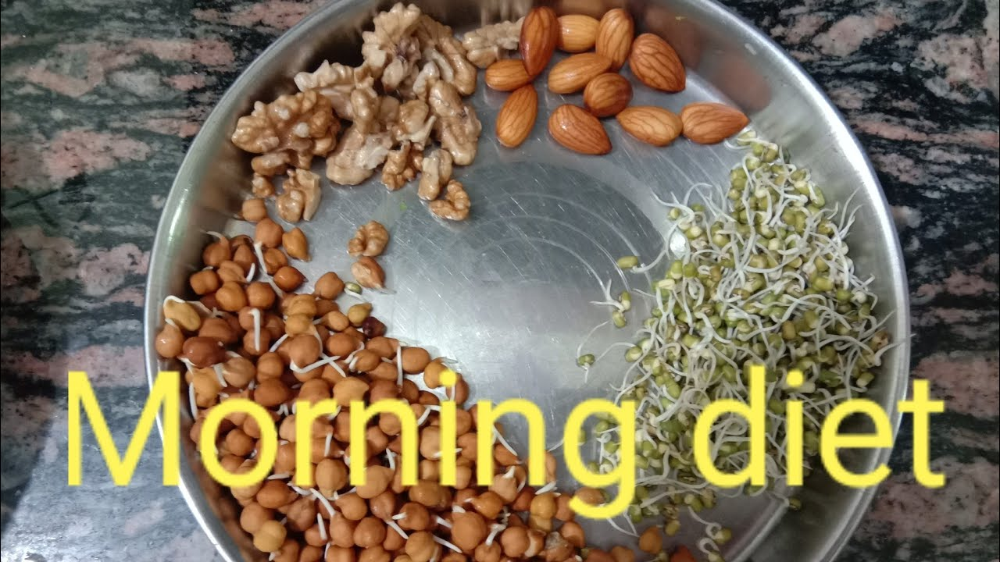
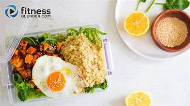
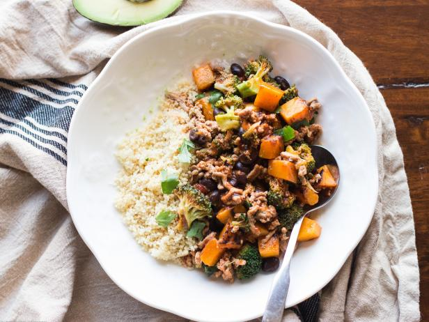
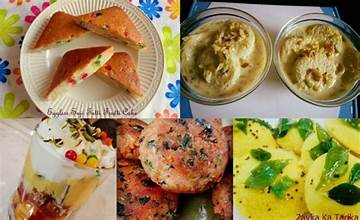
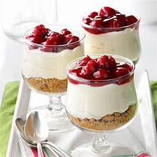
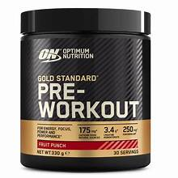

Featured Diet

Morning
- Option 1: Oats with fresh fruit and boiled eggs or a vegetable omelette, paired with green tea or black coffee.
- Option 2: Idli or dosa with chutney and sambar, accompanied by a glass of fresh orange juice or coconut water.

Afternoon
- Option 1: Grilled chicken or fish with brown rice and a side of mixed vegetables, plus a salad.
- Option 2: Dal with chapati or brown rice, and paneer curry or vegetable sabzi, finished with a bowl of yogurt.

Night
- Option 1: Steamed fish with sautéed vegetables and a side of sweet potato or brown rice.
- Option 2: Vegetable soup with whole grain toast, and grilled tofu or stir-fried vegetables, followed by herbal tea or a small fruit bowl.

Snacks
- Option 1: A handful of mixed nuts with a piece of fruit, like an apple or banana.
- Option 2: Greek yogurt with honey and a sprinkle of granola or a small portion of hummus with carrot sticks.

Dessert
- Option 1: Chia seed pudding made with almond milk and topped with berries.
- Option 2: A small serving of dark chocolate (70% cacao or higher) with sliced strawberries.

Pre-Workout
- Option 1: A banana or apple with a tablespoon of almond or peanut butter for quick energy.
- Option 2: A smoothie made with spinach, banana, protein powder, and almond milk to fuel your workout.